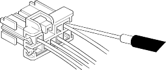

- Do not use wires or harnesses with broken insulation. Replace them or repair them by wrapping the break with electrical tape.
- After installing parts, make sure that no wires are pinched under them.
- When using electrical test equipment, follow the manufacturer's instructions and those described in this manual.
- If possible, insert the probe of the tester from the wire side (except waterproof connector).

- Use a probe with a tapered tip.
- Refer to the instructions in the Honda Terminal Kit for identification and replacement of connector terminals.